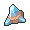

EpisodeΔ后
剧情流程
- 未白镇
- 从主角的房间到家的一楼，主角父亲会赠送主角
 船票。
船票。 - 与妈妈说话后获赠拉帝亚斯进化石/拉帝欧斯进化石。
- 出门后听到了博士的呼救，前往１０１号道路。
- 发现被豪力追赶的小田卷博士。
- 从博士的包包里选择
![藤藤蛇]() 藤藤蛇、
藤藤蛇、![暖暖猪]() 暖暖猪或
暖暖猪或![水水獭]() 水水獭其中之一。
水水獭其中之一。 - 解决事件以后博士会把主角所选择的宝可梦赠送给主角。
- 注意:如果之前没有拿城都地区最初的伙伴，则此次会获得。
- 前往凯那市或水静市的码头能乘船到对战度假地。
- 从主角的房间到家的一楼，主角父亲会赠送主角
- 绿岭市
- 在大吾的家可以获得一只
 铁哑铃。
铁哑铃。
- 在大吾的家可以获得一只
- 对战度假地
- 下船后遇到满充，在桥上撞到了水梧桐、阿泉和阿潮/赤焰松、火村和火雁，对话后阿潮/火雁会赠送主角巨牙鲨进化石/
 喷火驼进化石。
喷火驼进化石。 - 如果之前没有在紫堇市获得
 对战记录器，则通过桥后有个宝可梦收藏家会赠送主角对战记录器。
对战记录器，则通过桥后有个宝可梦收藏家会赠送主角对战记录器。 - 在海边能遇到帅哥。
- 到帅哥所在的房子与帅哥对话能得到差不多娃娃进化石。
- 到熔岩队队员和海洋队队员所在的房子触发剧情后与他们对话能得到
![喷火驼]() 喷火驼和
喷火驼和![巨牙鲨]() 巨牙鲨。
巨牙鲨。 - 进入对战屋，遇到四天王花月。对话后能挑战战斗屋。
- 下船后遇到满充，在桥上撞到了水梧桐、阿泉和阿潮/赤焰松、火村和火雁，对话后阿潮/火雁会赠送主角巨牙鲨进化石/
- 神奥地区最初拿到的宝可梦获得方法
- 进入宝可梦联盟，与四天王和冠军对战，胜利后能从大吾处得到巨金怪进化石，登入名人堂。
- 出门后听到了博士的呼救，前往１０１号道路。
- 发现被博士妻子追赶的小田卷博士。
- 从博士的包包里选择
 草苗龟、
草苗龟、 小火焰猴或
小火焰猴或 波加曼其中之一。
波加曼其中之一。 - 解决事件以后博士会把主角所选择的宝可梦赠送给主角。
- 同时获得两台自行车的方法
- 到１１１号道路的沙漠西北边，使用音速自行车爬上沙坡和灵异迷形象的女性对话。
- 从１１９号道路中央河水开始地图北端，使用冲浪和攀瀑来移动。爬上瀑布，在北端有个轨道，使用
 越野自行车行走，在西北方向和养鸟人形象的男性对话。
越野自行车行走，在西北方向和养鸟人形象的男性对话。 - 在对战度假地东南边与铁人三项运动员对话。
- 和以上三人对话完后，回到紫堇市的风野自行车店与店长对话即可。
- 沙漠遗迹、小岛洞穴和古代坟墓
- 准备好
![古空棘鱼]() 古空棘鱼、
古空棘鱼、![吼鲸王]() 吼鲸王、以及习得挖洞的宝可梦。从暮水镇冲浪向左，经过急流来到１３４号水路。在深水区下潜。
吼鲸王、以及习得挖洞的宝可梦。从暮水镇冲浪向左，经过急流来到１３４号水路。在深水区下潜。 - 在下方发现石板。上浮，来到布告石室。
- 阅读石板。对最中央的石板使用挖洞，会出现一个洞。进入。
- 将同行宝可梦调整为第一只是古空棘鱼，最后一只是吼鲸王，调查最上方石板，引发地震。
- 前往１１１号道路的沙漠，发现沙漠遗迹。阅读石板，之后按照→→↓↓行走并使用怪力，遗迹内的门打开，在里面会出现
![雷吉洛克]() 雷吉洛克。
雷吉洛克。 - 前往１０５号水路的左侧水域，发现小岛洞穴。阅读石板，静止等待2分钟，在里面会出现
![雷吉艾斯]() 雷吉艾斯。
雷吉艾斯。 - 前往１２０号道路的左侧，发现古代坟墓内，阅读石板，之后在遗迹最中央使用飞翔，遗迹内的门打开，在里面会出现
![雷吉斯奇鲁]() 雷吉斯奇鲁。
雷吉斯奇鲁。 - 与暮水镇东北边民房中的小女孩交谈后，会获取到雷吉奇卡斯的出现的线索。在捕捉到雷吉洛克、雷吉艾斯和雷吉斯奇鲁的次日起，队伍中包含上述3只宝可梦且时间不在夜晚，且队伍中的雷吉艾斯拥有昵称且携带了
 不融冰、
不融冰、
冰冷岩石、 冰柱石板、雪球或飞云冰淇淋的其中一种，就会在小岛洞穴遇见
冰柱石板、雪球或飞云冰淇淋的其中一种，就会在小岛洞穴遇见![雷吉奇卡斯]() 雷吉奇卡斯。
雷吉奇卡斯。
- 准备好
炎之冒险团／岚之冒险团／光之冒险团 • 极大之门与无限迷宫 • 超级不可思议迷宫 • 救助队DX
原文：神奇宝贝百科《附录:寶可夢 歐米加紅寶石／阿爾法藍寶石流程》（修订版本 2579727，2026-05-24），作者见原文页面历史。本页由 Eli 的杂货间转载，并有改动（重新排版、去掉站内链接）。原文与本页均以 CC BY-NC-SA 3.0 授权。配图来自原站，版权归原作者与游戏厂商；地图截图来自 Bulbagarden Archives，游戏画面版权归 Nintendo / Game Freak / The Pokémon Company。